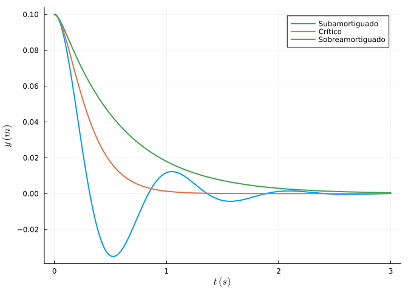
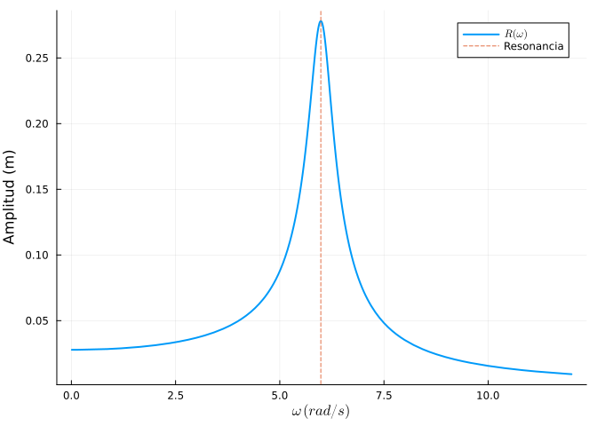
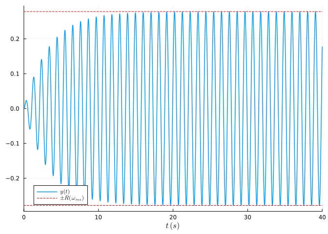
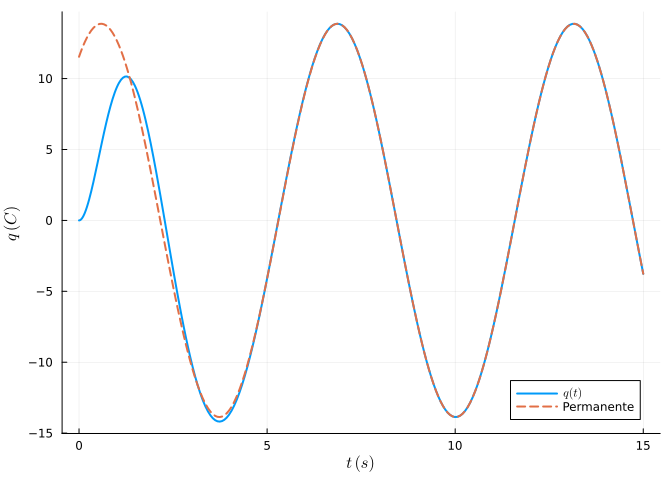
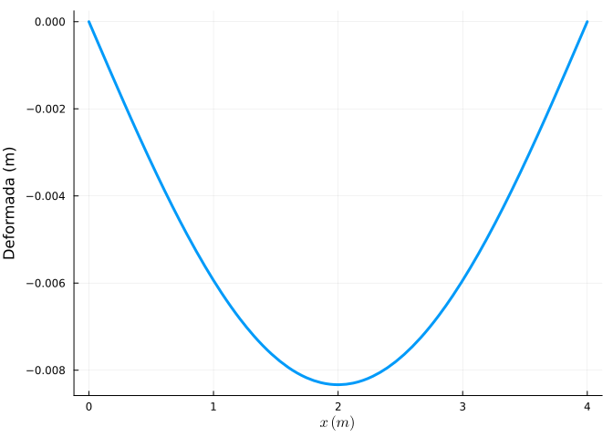

4 Ecuaciones lineales de orden superior al primero
Una ecuación diferencial lineal de orden \(n\) con coeficientes constantes,
\[ a_n y^{(n)} + \dots + a_1 y' + a_0 y = b(t), \]
se resuelve hallando la solución general de la homogénea a partir de las raíces del polinomio característico \(a_n\lambda^n + \dots + a_1\lambda + a_0 = 0\), y sumándole una solución particular de la completa (por coeficientes indeterminados o variación de las constantes). Toda ecuación de orden \(n\) equivale a un sistema de \(n\) ecuaciones de primer orden.
4.1 Ejercicios resueltos
Para la realización de esta práctica se requieren los siguientes paquetes:
using SymPyPythonCall # Cálculo simbólico.
using LinearAlgebra # Cálculo de autovalores.
using Plots # Dibujo de gráficas.
using DifferentialEquations # Resolución numérica.
using LaTeXStrings # Código LaTeX en los gráficos.
NotaVersiones de Julia y de los paquetes utilizados
Status `~/.julia/environments/v1.12/Project.toml` [0c46a032] DifferentialEquations v8.0.2 [b964fa9f] LaTeXStrings v1.4.0 [91a5bcdd] Plots v1.41.6 [bc8888f7] SymPyPythonCall v0.5.1 [37e2e46d] LinearAlgebra v1.12.0
Ejercicio 4.1 Suspensión de un automóvil. El sistema de suspensión de la rueda de un coche se modela como un sistema masa–muelle–amortiguador
\[ m\,y'' + c\,y' + k\,y = 0, \]
con masa \(m = 250\) kg y rigidez del muelle \(k = 10^4\) N/m. La constante de amortiguación \(c\) del amortiguador (en N·s/m) puede elegirse en el diseño.
Calcular el valor crítico \(c^* = 2\sqrt{mk}\) y resolver simbólicamente la ecuación en los tres regímenes: subamortiguado (\(c = 1000\)), crítico (\(c = c^*\)) y sobreamortiguado (\(c = 6000\)), con condiciones iniciales \(y(0) = 0.1\) m, \(y'(0)=0\) (bache inicial).
NotaAyudaLas raíces del polinomio característico \(m\lambda^2 + c\lambda + k = 0\) determinan el régimen: complejas (subamortiguado), doble (crítico) o reales distintas (sobreamortiguado). Usar
dsolvedeSymPyconics = Dict(y(0) => ..., diff(y(t),t)(0) => ...).Alternativamente resolver cada caso con
dsolvesin condiciones y determinar las constantes consolve.TipSoluciónm, k = 250, 10^4 ccrit = 2 * sqrt(m * k)3162.2776601683795El amortiguamiento crítico es \(c^* = 2\sqrt{250\cdot 10^4} \approx 3162\) N·s/m. Raíces características en cada caso:
using SymPyPythonCall @syms λ [solve(m * λ^2 + c * λ + k, λ) for c in (1000, ccrit, 6000)]3-element Vector{Vector{Sym{PythonCall.Py}}}: [-2 - 6*I, -2 + 6*I] [-6.32455545033384, -6.32455519033968] [-12 - 2*sqrt(26), -12 + 2*sqrt(26)]Resolución simbólica con condiciones iniciales:
@syms t y() soluciones = Dict() for c in (1000, round(ccrit), 6000) eq = Eq(m * diff(y(t), t, 2) + c * diff(y(t), t) + k * y(t), 0) sol = dsolve(eq, y(t), ics = Dict(y(0) => Sym(1)/10, diff(y(t), t)(0) => 0)) soluciones[c] = rhs(sol) end soluciones[1000]\(\left(\frac{\sin{\left(6 t \right)}}{30} + \frac{\cos{\left(6 t \right)}}{10}\right) e^{- 2 t}\)
En el caso subamortiguado la solución es de la forma \(e^{-2t}(A\cos\omega t + B\sin\omega t)\) con \(\omega=6\) rad/s: la rueda oscila mientras decae. En los otros dos casos la solución es suma de exponenciales reales decrecientes y no oscila.
Dibujar las tres soluciones. ¿Por qué los fabricantes ajustan la suspensión cerca del amortiguamiento crítico?
TipSoluciónusing Plots, LaTeXStrings plt = plot(xlab = L"t \; (s)", ylab = L"y \; (m)") etiquetas = Dict(1000 => "Subamortiguado", round(ccrit) => "Crítico", 6000 => "Sobreamortiguado") for (c, expr) in sort(collect(soluciones), by = first) plot!(plt, lambdify(expr, (t,)), 0, 3, lw = 2, label = etiquetas[c]) end plt
Con poco amortiguamiento el coche rebota varias veces (incómodo e inseguro); con demasiado, tarda mucho en volver a la posición de equilibrio. El amortiguamiento crítico devuelve la rueda al equilibrio lo más rápido posible sin oscilar, que es el compromiso óptimo.
Ejercicio 4.2 Resonancia: pasarela peatonal. Una pasarela peatonal se comporta como un oscilador
\[ y'' + 2\beta\, y' + \omega_0^2\, y = F_0 \cos(\omega t), \]
con frecuencia natural \(\omega_0 = 6\) rad/s, amortiguamiento \(\beta = 0.3\) s\(^{-1}\) y forzamiento \(F_0 = 1\) m/s² producido por los pasos de los peatones con frecuencia \(\omega\).
Calcular por coeficientes indeterminados la solución particular estacionaria \(y_p = R\cos(\omega t - \varphi)\) y obtener la amplitud \(R(\omega)\).
NotaAyudaSustituir \(y_p = a\cos\omega t + b\sin\omega t\) en la ecuación e igualar coeficientes con
solve. La amplitud es \(R = \sqrt{a^2+b^2} = \dfrac{F_0}{\sqrt{(\omega_0^2-\omega^2)^2 + 4\beta^2\omega^2}}\).TipSoluciónusing SymPyPythonCall @syms t ω::positive a b β, ω0, F0 = Sym(3)/10, 6, 1 yp = a * cos(ω * t) + b * sin(ω * t) resto = expand(diff(yp, t, 2) + 2β * diff(yp, t) + ω0^2 * yp - F0 * cos(ω * t)) coefs = solve([resto.coeff(cos(ω * t)), resto.coeff(sin(ω * t))], [a, b]) R = simplify(sqrt(coefs[a]^2 + coefs[b]^2))\(\frac{5 \sqrt{25 ω^{4} - 1791 ω^{2} + 32400}}{\left|{25 ω^{4} - 1791 ω^{2} + 32400}\right|}\)
Se obtiene \(R(\omega) = \dfrac{1}{\sqrt{\omega^4 -71.64\,\omega^2 + 1296}} = \dfrac{1}{\sqrt{(36-\omega^2)^2 + 0.36\,\omega^2}}\).
Dibujar la curva de resonancia \(R(\omega)\) para \(\omega\in(0, 12)\), localizar la frecuencia de máxima amplitud y comparar la amplitud resonante con la estática \(R(0)\). ¿Qué implicaciones tiene para el diseño?
TipSoluciónusing Plots, LaTeXStrings Rnum = lambdify(R, (ω,)) plot(Rnum, 0.01, 12, lw = 2, label = L"R(\omega)", xlab = L"\omega \; (rad/s)", ylab = "Amplitud (m)") ωres = sqrt(36 - 2 * 0.3^2) vline!([ωres], ls = :dash, label = "Resonancia")
(ω_resonancia = ωres, amplificación = Rnum(ωres) / Rnum(0.01))(ω_resonancia = 5.984981202978001, amplificación = 10.01249581293317)La amplitud máxima se alcanza en \(\omega_{res}=\sqrt{\omega_0^2 - 2\beta^2}\approx 5.98\) rad/s y es unas 10 veces la respuesta estática. Si la cadencia de los peatones (≈ 2 pasos/s, \(\omega\approx 12\) rad/s, o su subarmónico lateral ≈ 6 rad/s) coincide con la frecuencia natural, las oscilaciones se amplifican peligrosamente; es el fenómeno que obligó a cerrar el Millennium Bridge de Londres en 2000 y que se corrige añadiendo amortiguadores (aumentar \(\beta\) aplana la curva).
Resolver numéricamente la ecuación completa con \(\omega = \omega_{res}\), \(y(0)=y'(0)=0\), y comprobar que la solución transitoria da paso a la oscilación estacionaria de amplitud \(R(\omega_{res})\).
TipSoluciónusing DifferentialEquations function pasarela!(du, u, p, t) du[1] = u[2] du[2] = -2 * 0.3 * u[2] - 36 * u[1] + cos(ωres * t) end sol = solve(ODEProblem(pasarela!, [0.0, 0.0], (0.0, 40.0)), saveat = 0.02) plot(sol, idxs = 1, lw = 1.5, label = L"y(t)", xlab = L"t\;(s)") hline!([Rnum(ωres), -Rnum(ωres)], ls = :dash, color = :red, label = L"\pm R(\omega_{res})")
Tras un transitorio de unos \(1/\beta \approx 3\)–10 s, la pasarela oscila con la amplitud estacionaria prevista.
Ejercicio 4.3 Circuito RLC en serie. La carga \(q(t)\) de un circuito RLC en serie con \(L = 1\) H, \(R = 2\ \Omega\), \(C = 0.25\) F y fuente \(E(t) = 50\cos t\) V satisface
\[ q'' + 2q' + 4q = 50\cos t, \qquad q(0) = 0,\; q'(0) = 0. \]
Resolver simbólicamente, identificar transitorio y régimen permanente, y calcular la amplitud de la corriente estacionaria \(i(t) = q'(t)\).
NotaAyuda
Resolver con dsolve; los términos con \(e^{-t}\) forman el transitorio. Derivar la parte estacionaria y calcular su amplitud como \(\sqrt{a^2+b^2}\).
TipSolución
using SymPyPythonCall
@syms t q()
eq = Eq(diff(q(t), t, 2) + 2diff(q(t), t) + 4q(t), 50cos(t))
sol = dsolve(eq, q(t), ics = Dict(q(0) => 0, diff(q(t), t)(0) => 0))
qsol = expand(simplify(rhs(sol)))\(\frac{100 \sin{\left(t \right)}}{13} + \frac{150 \cos{\left(t \right)}}{13} - \frac{250 \sqrt{3} e^{- t} \sin{\left(\sqrt{3} t \right)}}{39} - \frac{150 e^{- t} \cos{\left(\sqrt{3} t \right)}}{13}\)
La parte que no contiene \(e^{-t}\) es el régimen permanente \(q_p = \frac{150}{13}\cos t + \frac{100}{13}\sin t\). La corriente estacionaria y su amplitud:
qp = Sym(150)/13 * cos(t) + Sym(100)/13 * sin(t)
ip = diff(qp, t)
amplitud = sqrt(ip.coeff(cos(t))^2 + ip.coeff(sin(t))^2) |> simplify\(\frac{50 \sqrt{13}}{13}\)
using Plots, LaTeXStrings
plot(lambdify(rhs(sol), (t,)), 0, 15, lw = 2, label = L"q(t)")
plot!(lambdify(qp, (t,)), 0, 15, ls = :dash, lw = 2, label = "Permanente",
xlab = L"t \; (s)", ylab = L"q \; (C)")
La amplitud de la corriente es \(\frac{50}{\sqrt{13}} \approx 13.9\) A. Nótese la analogía completa con el oscilador mecánico: \(L \leftrightarrow m\), \(R \leftrightarrow c\), \(1/C \leftrightarrow k\).
Ejercicio 4.4 Ecuación de cuarto orden: flexión de una viga (ingeniería civil). La deformación \(y(x)\) de una viga uniforme de longitud \(L = 4\) m sometida a una carga distribuida constante \(w\) satisface la ecuación de Euler–Bernoulli
\[ EI\,y^{(4)} = w, \]
con \(EI = 2\times 10^6\) N·m² y \(w = 5000\) N/m. La viga está biapoyada: \(y(0)=y(L)=0\) (apoyos) e \(y''(0)=y''(L)=0\) (momento nulo en los extremos).
Resolver el problema de contorno, dibujar la deformada y calcular la flecha máxima, comparándola con la fórmula clásica \(y_{max} = \dfrac{5wL^4}{384\,EI}\).
NotaAyuda
Integrar cuatro veces la ecuación (o usar dsolve), obtener un polinomio de grado 4 con cuatro constantes y determinarlas imponiendo las cuatro condiciones de contorno con solve.
TipSolución
using SymPyPythonCall
@syms x y() C1 C2 C3 C4
EI, w, L = Sym(2 * 10^6), 5000, 4
sol = dsolve(Eq(EI * diff(y(x), x, 4), w), y(x))
yg = rhs(sol)\(C_{1} + C_{2} x + C_{3} x^{2} + C_{4} x^{3} + \frac{x^{4}}{9600}\)
dsolve da \(y = \frac{w}{24EI}x^4 + C_1 + C_2x + C_3x^2 + C_4x^3\). Imponemos las condiciones de contorno:
consts = free_symbols(yg - w/(24EI) * x^4) # Las cuatro constantes
condiciones = [yg(x => 0), yg(x => L),
diff(yg, x, 2)(x => 0), diff(yg, x, 2)(x => L)]
csol = solve(condiciones, consts)
ydef = simplify(yg.subs(csol))\(\frac{x \left(x^{3} - 8 x^{2} + 64\right)}{9600}\)
La deformada es \(y(x) = \frac{w}{24EI}\left(x^4 - 2Lx^3 + L^3 x\right)\). La flecha máxima está en el centro:
flecha = ydef(x => L/2)
formula = 5 * w * L^4 / (384 * EI)
(flecha_calculada = N(flecha), formula_clasica = N(formula))(flecha_calculada = 0.008333333333333333, formula_clasica = 1//120)using Plots, LaTeXStrings
plot(lambdify(-ydef, (x,)), 0, 4, lw = 3, legend = false,
xlab = L"x \; (m)", ylab = "Deformada (m)", yflip = false)
Ambos valores coinciden: la flecha máxima es de unos \(8.3\) mm, aceptable frente al límite habitual de servicio \(L/300 \approx 13\) mm.
Ejercicio 4.5 Reducción a un sistema de primer orden. Escribir la ecuación de la pasarela del Ejercicio 4.2 como un sistema \(\mathbf{x}'=A\mathbf{x}+\mathbf{b}(t)\) con \(\mathbf{x}=(y, y')\), comprobar que los autovalores de \(A\) coinciden con las raíces del polinomio característico y que la solución numérica del sistema coincide con la de la ecuación de segundo orden.
TipSolución
Con \(x_1=y\), \(x_2=y'\):
\[ A = \begin{pmatrix} 0 & 1 \\ -\omega_0^2 & -2\beta \end{pmatrix} = \begin{pmatrix} 0 & 1 \\ -36 & -0.6 \end{pmatrix}, \qquad \mathbf{b}(t) = \begin{pmatrix} 0 \\ \cos\omega t\end{pmatrix}. \]
using LinearAlgebra
A = [0 1.0; -36 -0.6]
eigvals(A)2-element Vector{ComplexF64}:
-0.3 - 5.992495306631454im
-0.3 + 5.992495306631454im@syms λ
solve(λ^2 + Sym(6)/10 * λ + 36, λ)\(\left[\begin{smallmatrix}- \frac{3}{10} - \frac{3 \sqrt{399} i}{10}\\- \frac{3}{10} + \frac{3 \sqrt{399} i}{10}\end{smallmatrix}\right]\)
Los autovalores de \(A\), \(-0.3 \pm 5.99i\), son exactamente las raíces del polinomio característico \(\lambda^2 + 2\beta\lambda + \omega_0^2\): la teoría de sistemas lineales del capítulo anterior contiene como caso particular a las ecuaciones de orden superior.
4.2 Ejercicios propuestos
Ejercicio 4.6 Ingeniería sísmica. Un edificio de un piso se modela como \(y'' + 2\cdot 0.05\cdot 4\, y' + 16 y = -a(t)\), donde \(a(t) = 3\sin(4.2t)e^{-0.1t}\) m/s² es la aceleración del suelo. Resolver numéricamente y calcular el desplazamiento máximo del edificio.
Ejercicio 4.7 Resolver simbólicamente \(y''' - 3y'' + 3y' - y = e^t\) (raíz triple) y comprobar que la solución particular requiere un factor \(t^3\).
Ejercicio 4.8 Ingeniería. Repetir el Ejercicio 4.4 para una viga en voladizo (\(y(0)=y'(0)=0\), \(y''(L)=y'''(L)=0\)) y comprobar que la flecha en el extremo libre es \(wL^4/(8EI)\).
Ejercicio 4.9 Resolver la ecuación de Euler–Cauchy \(x^2y'' + xy' - y = 0\), que aparece en problemas de potencial con simetría radial, mediante el cambio \(x=e^s\) y con dsolve.